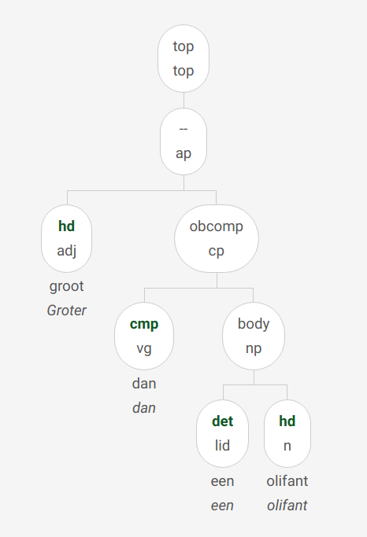
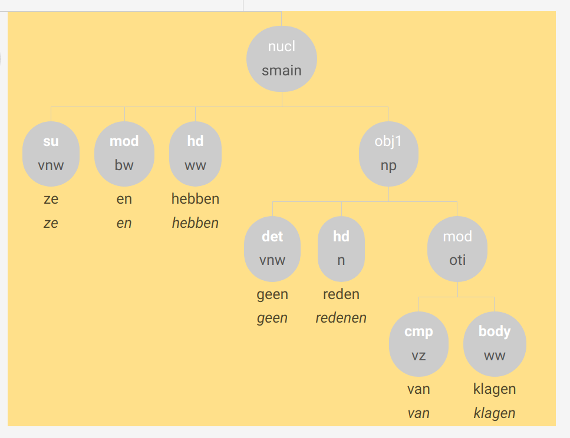
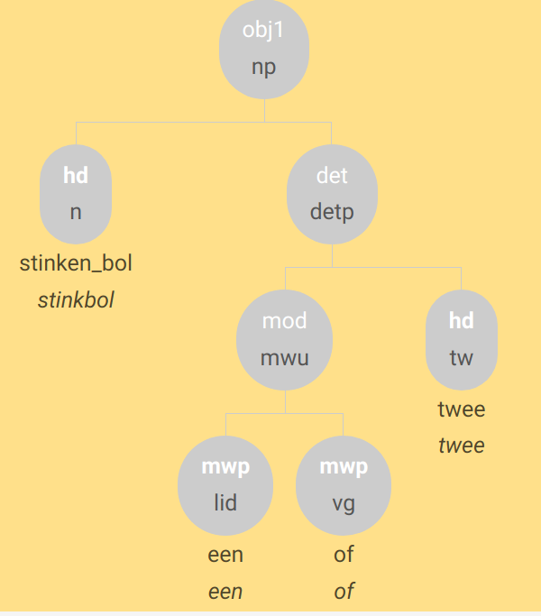
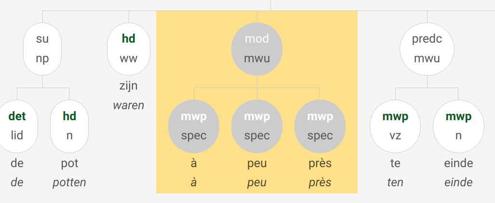

Zie ook
Motivatie waarom het in veel geval noodzakelijk is met XPath aan de slag te gaan:
We zoeken naar “groter dan/of/als X”-constructies. We voeren “groter dan een olifant” in bij de example-based search.
De analyse is:

en de bijbehorende xpath is
//node[@cat="ap" and @rel="--" and
node[@pt="adj" and @rel="hd"] and
node[@cat="cp" and @rel="obcomp" and
node[@pt="vg" and @rel="cmp"] and
node[@cat="np" and @rel="body" and
node[@pt="lid" and @rel="det"] and
node[@pt="n" and @rel="hd"]]]]Hiermee worden 2 resultaten gevonden - een teleurstellend resultaat. Deze query is duidelijk te restrictief. Naar @rel="-- waren we niet op zoek, en eigenlijk maakt de vorm van het vergelijkende element ook niet uit. We moeten de query dus tot zijn essentie reduceren:
//node[@cat="ap" and
node[@pt="adj" and @rel="hd"] and
node[@cat="cp" and @rel="obcomp" and
node[@pt="vg" and @rel="cmp"] and
node[@rel="body" ]]]Hiermee vinden we 118 resultaten, een aannemelijker aantal.
//node[count(./node[@rel='su']) > 1]omdat hem peinsde dat dat zijn kindje was.
//node[@rel="su" and @word="hem"]Iets algemener:
//node[@rel="su" and @naamval="obl"]Deze constructie wordt noch in de Lassy-handleiding noch in de CGN-beschrijving besproken. In het GCND is dit het zoals presentatief er behandeld, en heeft het dus het dependentielabel MOD.
?Adjectieven met “geen”.
Vindbaar met:
//node[@rel='mod' and word='het']De resultaten zijn soms een beetje verwarrend
Uit het Lassy-annotatiemanual:
| dependentielabel | OMSCHRIJVING |
|---|---|
| NUCL | kernzin |
| DLINK | discourse-link In samenhangende tekst komt het vaak voor dat een spreker een zin begint of eindigt met iets dat op een voegwoord lijkt, maar geen syntactisch verband heeft: maar wat ik zeggen wou … |
| SAT | satelliet: aan- of uitloop ‘aanloop’- en ‘uitloop’-elementen die een anaforische relatie onderhouden met verwijswoorden in de kernzin. NUCL:[het verbaast me] SAT:[dat je dat nog weet] |
| TAG | aanhangsel, tussenvoegsel. Elementen die op een andere manier dan DLINK en SAT buiten de kernzin staan |
| DP | discourse-part |
| categorielabel | OMSCHRIJVING |
|---|---|
| DU | discourse-unit |
Jan, die ken ik niet
Dit goed te gaan in Alpino, en kan dus via example-based search worden gevonden.
Herkenbaar aan dependentierelatie SAT en (categorie np of woordsoort zelfstandig naamwoord (n).
//node[@rel='sat' and (@cat='np' or @pt='n')][@begin="0"]Niet altijd makkelijk te onderscheiden van volgende categorie.
mijn vent wist hij ook niet wat dat was en nu komt …
Er staat steeds een naamwoordgroep in de eerste positie, die later in de zin door een persoonlijk voornaamwoord (hij, het, zij, hem, haar) wordt opgenomen
Nominale tag-nodes aan het begin van de zin zoek je met
//node[@rel='tag' and (@cat='np' or @pos='noun') and @begin="0"]Niet alle matches van deze query zijn daadwerkelijk topicalisaties.
zo, dat was plezant.
natuurlijk, moeilijk is het niet.
kom, ik ga er maar vandoor.
jongens, ik vertrek nu.
Met dit soort structuren kan Alpino doorgaans vlotjes om; preprocessing is dan ook niet nodig.
Geanalyseerd met dependentierelaties tag (voor tussenwerpsel of aansporing) en nucl (voor de eigenlijke zin)
//node[@rel='tag' and (@cat="pp" or @pt='bw' or @cat="advp" or @pt="tsw") and @begin="0"][../node[@rel='nucl']]zeg als je nu trouwt het zijn altijd voort kosten.
//node[@rel="tag" and @cat="cp"]Mogelijk ook:
//node[@rel="tag" and @cat="pp"]in de zomer t e klaar tot sn avonds t negenen
Wat vindt u der eigenlijk van dat zulke zinnen dat die zo geanalyseerd worden?
Zijn getagd met met SAT
//node[@rel='tag'][node[@rel='mwp' and @pt='tsw'] and node[@rel='mwp' and @pos='pron']]Het is toch geen waar, etc
(Laatste met sv1, verschil met smain niet zo duidelijk?)
Inleidende matrixzin (hij zei):
Dependentielabel (rel): tag Categorielabel (cat): smain
Pseudodirecte rede - V2-bijzin (hij weet het niet):
Depentielabel (rel): nucl
Categorielabel (cat): smain (of – bij werkwoordsinitiële zinnen – sv1)//node[./node[@rel='tag' and @cat='smain'] and node[@rel='nucl' and (@cat='smain' or @cat='sv1')]]NB: Alpino parset directe en pseudodirecte redes doorgaans automatisch juist als je een komma toevoegt tussen de matrixzin en de V2-bijzin.
Let op: afwijking van Lassy: In het GCND kiezen we ervoor parentheses het dependentielabel TAG te geven en op hetzelfde niveau als de hoofdzin onder te brengen .
//node[@rel='tag' and @cat='smain']
[number(../node[@cat='smain' and @rel='nucl' and @begin and @end]
/@begin) < @begin]
[number(../node[@cat='smain' and @rel='nucl' and @begin and @end]/@end) > @begin]Voor ‘of’ bijvoorbeeld:
//node[@rel='obcomp'][./node[@rel='cmp' and @word='of']]Meerwoordige voegwoordelijke combinaties:
//node[@rel='obcomp'][./node[@rel='cmp' and @cat='mwu']]Vindbaar met:
//node[@rel="vc" and @cat="svan"]Bijvoorbeeld beperkt tot combinatie met “zeggen”
//node[node[@rel="hd" and @lemma="zeggen"] and node[@rel="vc" and @cat="svan"]]//node[@cat='cp']/node[@rel='cmp' and @cat='mwu'][./node[@word="dat"]]//node[@word="wie" and @rel="whd"][following-sibling::node[./node[@word="dat" and @pt="vg"]]]//node[@word="die" and @rel="rhd"][following-sibling::node[./node[@word="dat" and @pt="vg"]]](Niet te vinden in corpus)
//node[@cat="whsub" and @rel="body" and
node[@lemma="wat" and @pt="vnw" and @rel="whd"] and
node[@cat="cp" and @rel="body" and
node[@cat="mwu" and @rel="cmp" and
node[@lemma="of" and @pt="vg" and @rel="mwp"] and
node[@lemma="dat" and @pt="vg" and @rel="mwp"]]]]//node[@cat='oti'][./node[@rel='cmp' and @pt='vz' and (@word='voor' or @word='van')]]//node [
node[@rel="vc"]
[node[@lemma="als"] and
node[@rel="body"]] and
node[@rel="hd" and @pt="ww"]
]Trage query, 23 resultaten voor nu, allemaal west vlaanderen
Hoofdzinvolgorde wordt gekenmerkt door * object na werkwoordelijk hoofd * of subject na werkwoordelijk hoofd * Let op object kan in VC zitten * Let op omdat zij wil broodjes eten etc zijn weliswaar te duiden als hoofdzinvolgorden, maar ook als WW-clusteronderbrekingen
Object is losstaand znw (dus geen VC node aanwezig in boom):
//node[@cat='ssub'][
node[@rel='hd' and @pt='ww'][number(../node[@rel='obj1' and @word and @pt='n']/@begin) > number(@begin)]
]Object zit binnen VC (dit overlapt met de vlaamse clusterdoorbreking)
//node[@cat='ssub'][
node[@rel='hd' and @pt='ww'][number(../node[@rel='vc'][node[@rel="obj1" and @pt="n"]]/@begin) > number(@begin)]
]Subject na werkwoordelijk hoofd:
//node[@cat='ssub']
[node[@rel='hd' and @pt='ww'][number(../node[@rel='su'][1]/@begin) > number(@begin)]]Lastig …. even later meer doorklooien
declare default element namespace "http://alpino.fake.url";
for $node in //node[@cat='ssub'][not (.//node[@index])]
[node[@rel='hd' and @pt='ww'][count(../node[@rel='su']) = 1][number(../node[@rel='su' and @word][.//@word][1]/@begin) > number(@begin)]]
let $sentence := $node/ancestor::*[local-name()='alpino_ds']/sentence,
$txt := string-join($node//@word, ' ')
return <node>{$node} <text>{$txt}</text> {$sentence}</node>Alpino ziet en standaard als voegwoord.
Negatie met en is terug te vinden met een xpath als
//node[./node[@rel='mod' and @word='en' and @pt='bw']]//node
[./node[@rel='mod' and @word='en' and @pt='bw']]
[node[@cat='np'][node[@rel='det' and @lemma='geen' and @pt='vnw']]]
Is behandeld als een meerwoordige determiner.
Complexe determiners waar niet deel van is, zijn te zoeken met
//node[@rel="det" and @cat="mwu"]
[node[@lemma="niet"]]!NB zou moeten zijn
node[node[@rel='hd' and @pt='ADJ'] and node[@rel='det' and lemma='geen']]Maar in de het corpus heeft in ieder geval waar vaak de n-tag,
A: Hij komt toch niet? B: Ja hij en doet ne komt.
Positieve positieve en negatieve replieken zijn vindbaar met iets als
//node[@lemma="doen" and @pvtijd='tgw']
[parent::node[@cat='smain']]
[../node[@rel="su" and @pt="vnw"]]
[not (../node[@rel="obj1"])]
[not (../node[@rel="vc" or @rel="predc"])]//node[@lemma="doen" and @pvtijd='tgw']
[../node[@word='en' and @rel="mod" and @pt="bw"]]
[parent::node[@cat='smain']]
[../node[@rel="su" and @pt="vnw"]]
[not (../node[@rel="obj1"])]
[not (../node[@rel="vc" or @rel="predc"])]Behandeld als een multi-word unit (MWU) die als modificeerder fungeert (MOD).
Het woord wordt 2x opgenomen, met hetzelfde dependentielabel.
Hier worden volgens de richtlijnen twee verbalen hoofden en twee subjecten getagd (mag dat wel? is meer dan een hd niet tegen de principes van Alpino?). In xpath:
node[count(./node[@rel='su']) =2 and count(./node[@rel='hd']) =2] Dit vindt echter niets. Alpino geeft voor het tweede voorbeeld een analyse met dp’s erin:
//node[following-sibling::node/node[@rel="su"]/@lemma=./node[@rel='su']/@lemma and following-sibling::node/node[@rel="hd"]/@lemma=./node[@rel='hd']/@lemma]Of eigenlijk preciezer
//node[following-sibling::node/node[@rel="su"][preceding-sibling::node[@rel='hd']]/@word=./node[@rel='su'][following-sibling::node[@rel='hd']]/@word and following-sibling::node/node[@rel="hd"]/@word=./node[@rel='hd']/@word]Helaas alleen voorbeelden met zeggen gevonden.
Een apokoinouconstructie is een constructie waarbij een woord of woordengroep tegelijkertijd deel uitmaakt, eerst als staart en dan als kop, van twee onafhankelijke constructies.
In het GCND wordt hier het categorielabel apokoinou gebruikt, en in het tweede zinsdeel is er een lege knoop die met het woord dat twee rollen heeft gecoïndiceerd is (=dezelfde index heeft).
//node[@cat="apokoinou"]
//node[@cat='conj'][count(./node[@pt='tw']) > 1 and count(./node[@pt="tw"]) = count(./node)]
De een … of determiner is te vinden met
//node[@cat='detp'
and node [@rel='mod' and @cat='mwu'][node[@rel='mwp' and @pt='lid'] and node[@rel='mwp' and @pt='vg'] ]
]
//node[@rel='det' and
node[@cat='detp' and @rel="cnj"
and node [@rel='mod' and @cat='mwu'][node[@rel='mwp' and @pt='lid'] and node[@rel='mwp' and @pt='vg'] ]
]]
Volgens de annotatierichtlijnen getagds als mwu met mwp delen.

//node[@cat="mwu"][node[@lemma="half"][../node[@pt="tw"]/@begin < @begin]]In de praktijk gebeurt het vaak anders:

//node[node[@lemma='te' and @rel='hd'] and node[@pt='tw' and @rel='obj1' ]]
//node[
node[@rel='det' and @pt="lid"] and
node[@rel="hd" and @pt="vnw" and @vwtype="aanw"]
]

//node[@cat='mwu'][node[@postag='SPEC(vreemd)'] and not (node[@postag!='SPEC(vreemd)'])]en als je voeten zweetten zwiep zat je kleine teen erdoor.
zodus iedere keer dat hij sloeg hé dat was . . . djoef.
Worden getagd als tsw, al dan niet met in zinsverband geannoteerde syntactische functie (predc bij b.)
//node[@pt='tsw']
Natuurlijk zijn lang niet alle tussenwerpsels klanknabootsingen.
Zinnen zoals
wij maar werken!
en ik zoeken maar!
worden in het GCND als infinitieven (categorielabel inf) geanalyseerd, maar mét een overt subject (su). Deze infinitief wordt i.p.v. een smain gebruikt.
Het moet eenvoudiger kunnen, maar hieronder een benadering:
//node[@cat="inf" and not (@rel="vc")][
node[@wvorm='inf' and @rel='hd'] and node[@rel='su'][descendant-or-self::node[@word]]
]
[not (descendant::node[@pt='ww' and @wvorm != 'inf'])]
[not (ancestor::node[@cat="whq" or @cat="oti" or @cat="ti" or @cat="smain"])]
[count(descendant::node[@pt="ww"]) = 1]